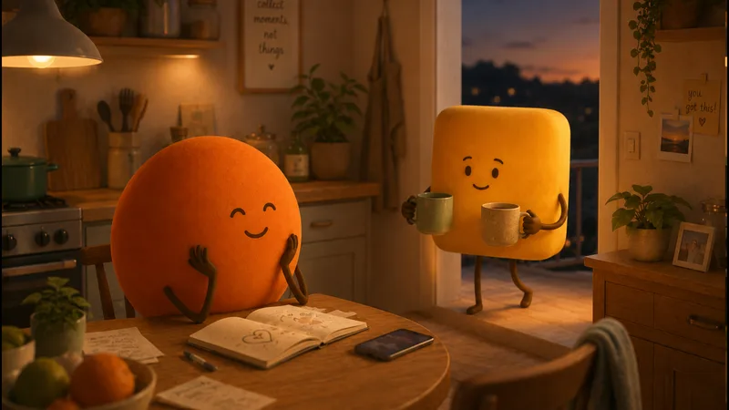
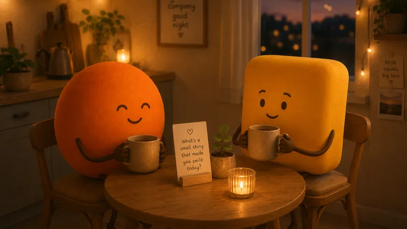

Search "relationship goals" and you get a very specific genre: golden hour, linen shirts, someone kissing a forehead at a scenic overlook. Beautiful. And about as related to a good relationship as a stock photo of a salad is to health.
Real relationship goals don't photograph, because the camera can't see the interesting part. It can't see that these two repaired before bed, that one of them said the scary small thing at dinner, that nobody checked anyone's phone because it never occurs to either of them.
So here is the other list. The unphotographable one.
The camera problem
The trouble with goals borrowed from the feed is that they describe outputs, not machinery. A couple that travels beautifully might fight savagely. Matching pajamas reveal nothing about what happens when the rent goes up.
Good goals describe how a relationship behaves under load, not how it looks at rest. Under load is where relationships are actually lived: the flat tire, the insulting Tuesday, the month one of you is not okay. Pick goals for that terrain and the sunsets take care of themselves.
12 relationship goals you can't photograph
1. Repair within the hour. Not zero fights; fast returns. The argument happens, and someone circles back before the evening hardens around it. What it looks like on a Tuesday: "okay, that went badly, can we try again?" said while the kettle is still warm.
2. Hard things said while they're small. The goal is a relationship where complaints get voiced at size one, not stored until size nine. Tuesday version: "I felt a bit dismissed earlier" instead of three weeks of polite frost.
3. Trust boring enough to forget. Phones face-up, passwords irrelevant, working late meaning working late. Not naive; earned into the background. Tuesday version: nothing visible. That's the point.
4. One ritual that survives busy weeks. A walk, a coffee, a question after dinner, defended like an appointment. Tuesday version: twenty minutes, phones in another room, even though the week is on fire. Our 150 questions exist for exactly this slot.
5. Staying two whole people. Separate friends, separate interests, evenings apart without negotiation or guilt. Tuesday version: "have fun, tell them hi" and meaning it.
6. Knowing each other's current version. People update; the goal is noticing. Tuesday version: you could name their current worry, their current small joy, and what they'd order right now, not three years ago.

7. Bids caught, most of the time. The "look at this" and the sigh from the other room are invitations, and the goal is a high catch rate. Researchers at the Gottman Institute found this single habit separates lasting couples from drifting ones. Tuesday version: phone down for thirty seconds, that's the whole skill.
8. Appreciation said out loud. Not felt, said. The goal is a relationship where nobody is loving anybody in secret. Tuesday version: "thank you for handling that call" within earshot of the person who handled it.
9. A team posture toward problems. The issue goes on one side of the table, both of you on the other. Tuesday version: "how do we fix this" arriving before "whose fault is this", at least most weeks.
10. Fluency in each other's comfort language. Knowing whether they're steadied by words, help, presence, or touch, and sending love in their dialect rather than yours. The full map is our love languages guide. Tuesday version: the right kind of comfort on the first try.
11. Money talked about in daylight. Not romantic, massively load-bearing. The goal is money conversations that happen calmly and regularly instead of explosively and rarely. Tuesday version: a fifteen-minute monthly check-in that nobody dreads.
12. A future being built on purpose. Direction chosen, not defaulted into. Tuesday version: occasionally asking each other where this is all going, with snacks, like co-conspirators rather than auditors.

Something small is in the works
We're quietly making something for the two of you. Leave your email and we'll surprise you when it's ready.
No spam, no newsletter. One good email when it’s ready.
How to pick yours (together, lightly)
Twelve goals is a menu, not a syllabus. Couples who try to install all of them at once last about nine days.
The better move: each of you reads the list and picks the one that made you wince, because the wince is information. Compare picks. If they match, that's your season's project. If they don't, even better; you just learned where each of you feels the gap, which is the most useful conversation on this entire page.
Then go small. "Repair within the hour" starts as repairing within the day. "Rituals" start as one protected coffee. Goals that change relationships are nearly invisible at first, which is exactly why nobody photographs them.

For your next conversation
- "Which goal on that list made you wince? Mine was different, probably."
- "What's one thing other couples do that you quietly admire?"
- "What do you hope is true about us in five years that isn't quite true yet?"
The couples worth envying were never the ones at the scenic overlook. They're the ones who handled this past Tuesday well, repaired by Wednesday, and have a standing thing on Thursdays that nobody is allowed to schedule over.
No camera will ever care. That's how you know it's real.
Questions couples actually ask
What are good relationship goals?
The ones that change ordinary days: repairing within hours instead of days, being able to say hard things while they're small, keeping one protected ritual a week, staying two whole people. Good goals describe how the relationship behaves under normal load, not how it looks on holiday.
Should couples set relationship goals together?
Lightly, yes. Not a performance review, just an occasional conversation about what you're building: pick one or two, revisit in a season. Couples who name a direction tend to drift less, and the conversation itself is usually worth more than the goal.
What are relationship goals for new couples?
Learn each other's repair styles early, establish that hard things are sayable, build one small ritual that survives busy weeks, and keep your friendships alive. New couples who practice recovering from small bumps gracefully are building the only skill the later years really demand.
Are social media relationship goals unrealistic?
They're not even goals; they're photographs. A sunset dinner is lovely and says nothing about how two people handle a hard Tuesday. Comparing your full relationship to other couples' highlights is the fastest way to feel poor while being rich.
Something small is in the works
A little surprise for couples is in the works. Be the first to know.
No spam, no newsletter. One good email when it’s ready.